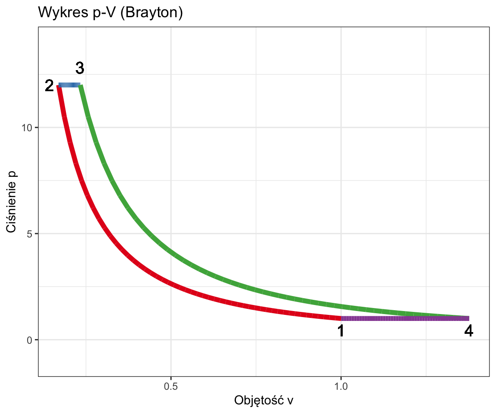
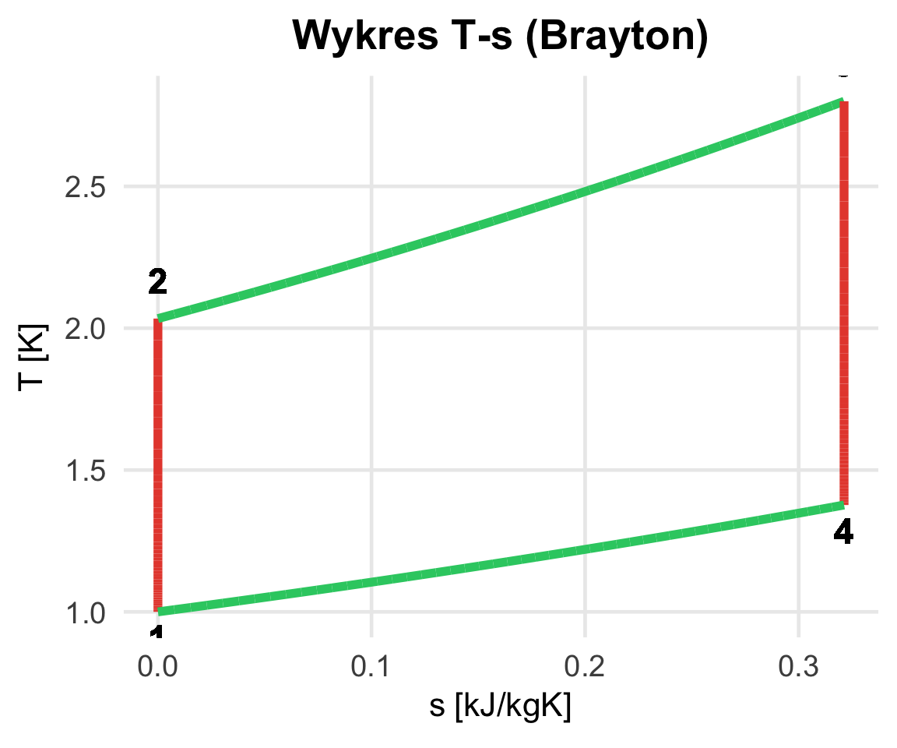

W9: Obiegi Gazowe (Silnikowe)
Silniki Spalinowe i Turbiny Gazowe
Wydział Inżynierii Środowiska i Inżynierii Mechanicznej


Wykres Indykatorowy (rzeczywisty)

Źródło: “Termodynamika Techniczna” Wiśniewski (2017)
Interpretacja pól na wykresie indykatorowym silnika 4-suwowego
- Pętla górna (prawobieżna) – Praca obiegu
- Obejmuje suwy sprężania i pracy (rozprężania)
- Pętla dolna (lewobieżna) – Praca wymiany ładunku (praca pompowania):
- Obejmuje suwy wydechu i ssania,
- Reprezentuje pracę ujemną (stratę).
6. Obieg Joule’a-Braytona (Turbina Gazowa)
Podstawa działania silników lotniczych i turbin w elektrowni.
Składa się z maszyn przepływowych (nie tłokowych!). Obieg jest otwarty.
- S - Sprężarka: Sprężanie adiabatyczne powietrza.
- K - Komora Spalania: Izobaryczne doprowadzenie ciepła (\(p=const\)).
- T - Turbina: Rozprężanie adiabatyczne (daje pracę napędową sprężarce + prąd).
- O - Wtryskiwacz
- R - Wymiennik ciepła Odzysk ciepła ze spalin
- N - Odbiornik macy

Źródło: “Termodynamika Techniczna” Wiśniewski (2017)
Brayton: Wykres i Procesy


Źródło: “Termodynamika Techniczna” Wiśniewski (2017)
- 1-2: Sprężanie w sprężarce (adiabatyczne odwracalne, \(s=const\)).
- 2-3: Doprowadzenie ciepła w komorze spalania (izobaryczne, \(p=const\)).
- 3-4: Rozprężanie w turbinie (adiabatyczne odwracalne, \(s=const\)).
- 4-1: Odprowadzenie ciepła do otoczenia (izobaryczne, \(p=const\)).